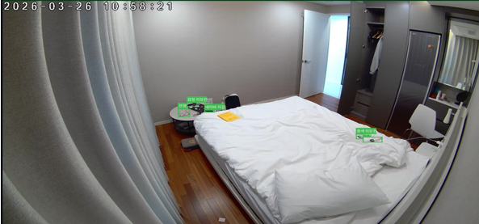
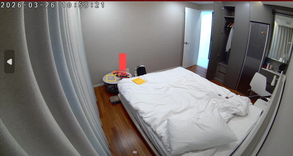

AI 비서용 GT 데이터 자동 생성 파이프라인 설계 및 VLM 통합 개발
코드 저장소는 비공개 계약 건으로 공개하지 않으며, 아래는 프로젝트 개요입니다.
시니어 레지던스 입주민 대상 AI 편의 서비스 개발을 위해, 침실·거실 고정 CCTV에서 지갑·스마트폰 등 생활 객체의 위치를 실시간으로 인식하는 시스템이 필요했습니다.
VLM에게 탐지 + 위치 분류 + bbox 생성을 동시에 요청했더니 다중 작업 과부하로 환각이 다수 발생하고, temperature를 낮춰도 프레임마다 결과가 달라지는 일관성 문제가 발생했습니다.
탐지는 CVAT 수동 bbox를 활용하고, VLM은 위치 분류만 전담하도록 역할을 분리했습니다. temperature=0, 단일 질문 구조로 전환.


같은 물건 주변에 라벨이 여러 개 겹쳐 붙던 문제(왼쪽)가, 역할 분리 후 단일 정확한 위치 분류(오른쪽)로 해결됐습니다.
객체 위치 자동 분류 파이프라인 완성 — AI 편의 서비스 학습용 고품질 GT 확보. ERGO-7B 등 비교 모델의 2~3배 과탐지 문제를 GT 대비 실측 실험으로 직접 검증했습니다.
VLM 프레임별 호출의 비용·지연 한계를 규칙기반 엔진 + SAM2 시드-프레임 트래킹으로 제거하고, Scene Graph Generation(REACT++)과 비교 실험까지 진행했습니다.
자세히 보기 →